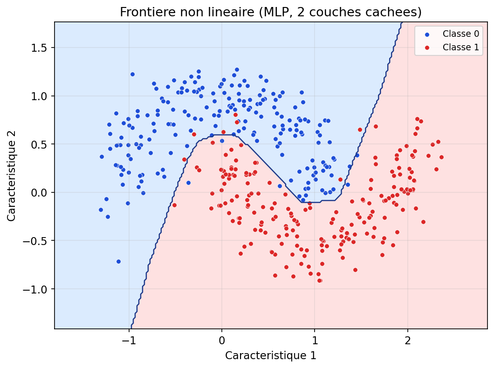

Nous avons vu la régression logistique comme une porte vers la classification, puis les SVM et les arbres comme d’autres façons de tracer une frontière. Les réseaux de neurones prolongent une idée plus ancienne encore : imiter, très grossièrement, la manière dont des cellules nerveuses combinent des signaux pour produire une réponse. Ce n’est pas une simulation du cerveau — c’est un calcul organisé en couches, que l’on optimise par la donnée. Ce qui rend cette famille puissante, c’est la composition : chaque couche transforme l’information ; empilées, elles peuvent représenter des relations que ni une droite ni un seul arbre ne capturent facilement.
Ce parcours est volontairement narratif et progressif : d’abord le neurone « comme une formule », puis la nécessité de la non-linéarité, ensuite l’entraînement (perte, descente, rétropropagation), enfin des exemples de domaines. Accrochez-vous : la section est longue — comme un mini-chapitre dans le chapitre — parce que ces idées valent le détour pour tout le reste de votre parcours en apprentissage profond.
Dans une caricature utile du neurone biologique, des signaux arrivent par les dendrites, se cumulent au soma, et si le dépasse un certain niveau, le neurone « tire » un influx le long de l’axone. L’analogie informatique retient trois ingrédients : des entrées pondérées, une agrégation (souvent une somme), une non-linéarité ou un seuil qui décide si la sortie est active ou non. Le réseau de neurones artificiel ne modélise pas la chimie ni les spikes milliseconde par milliseconde : il s’agit d’un schéma de calcul efficace pour ajuster des millions de paramètres sur GPU.
Reprenez la section 3 : une régression logistique calcule un score z = wᵀx + b, puis applique la sigmoïde pour obtenir une probabilité. Un neurone de sortie en classification binaire avec fonction sigmoïde et entropie croisée, c’est exactement cette même brique mathématique : combinaison linéaire + activation. La figure ci-dessous résume le flux « entrées → combinaison linéaire → activation → probabilité ».
Figure : un neurone de classification binaire (sigmoïde) = même structure que la régression logistique

Dès que l’on empile des couches, chaque neurone caché refait le couple « somme pondérée + activation », mais son rôle n’est plus de donner directement une probabilité finale : il fabrique des caractéristiques intermédiaires que la couche suivante combine. La leçon à retenir pour plus tard : un neurone « classique » ressemble à une petite régression (logistique si la sortie est bornée entre 0 et 1) ; le réseau entier est une composition de ces briques.
Un perceptron historique correspond à une seule couche de décision linéaire (séparable). Le perceptron multicouche (MLP) intercale une ou plusieurs couches cachées : les entrées sont transformées, puis retransformées, jusqu’à la sortie. La figure suivante illustre une architecture minimale : deux entrées, trois neurones cachés, une sortie — suffisante pour fixer les idées ; en pratique les réseaux comptent des centaines ou millions de paramètres.
Figure : exemple de MLP (2 → 3 → 1)

Notation utile. Si a(ℓ) désigne le vecteur d’activations de la couche ℓ, on écrit schématiquement a(ℓ) = fℓ(W(ℓ)a(ℓ−1) + b(ℓ)). L’empilement de fonctions non linéaires fℓ est ce qui donne au réseau sa expressivité — à condition de ne pas se limiter à des identités linéaires sans activation.
Si l’on enchaîne des transformations purement linéaires sans activation non triviale entre les couches, l’ensemble reste équivalent à une seule transformation linéaire : on n’a rien gagné en richesse. Introduire ReLU, sigmoïde ou tanh casse cette équivalence et permet d’approcher des frontières courbes, des régions enclavées, des motifs qui se répètent.
Le cas d’école est le XOR : quatre points du plan, deux classes en diagonale. Aucune droite ne sépare les deux classes ; un classifieur linéaire (régression logistique sans enrichissement de features) échoue. Un petit MLP avec une couche cachée peut, lui, redessiner des régions non convexes. La figure 58 montre une solution typique après entraînement.
Figure : problème XOR — frontière possible avec un MLP

La figure 54 compare, sur des cercles imbriqués simulés, une régression logistique (séparation linéaire) et un MLP avec une couche cachée : même données, capacités différentes. C’est le même genre de constat que pour la SVM à noyau ou les arbres, sous une autre forme algorithmique.
Figure : régression logistique (gauche) vs MLP (droite) sur données non linéairement séparables

La sigmoïde comprime z dans ]0, 1[ : pratique pour interpréter une sortie comme probabilité, mais ses dérivées proches de zéro pour |z| grand peuvent ralentir l’apprentissage en profondeur (vanishing gradients). La tanh centre autour de 0. La ReLU max(0, z) est simple, souvent efficace, et entraîne des neurones « éteints » si z < 0 de façon prolongée — d’où des variantes (Leaky ReLU, GELU, etc.) dans la littérature récente.
Figure : sigmoïde, ReLU et tanh sur le même intervalle

Comme pour la régression linéaire, le cycle fondamental reste : forward pass (calculer la sortie), loss (écart aux étiquettes), backward pass (gradients), mise à jour des poids — souvent par descente de gradient stochastique ou variantes (Adam, RMSprop…). La loss peut être MSE en régression, entropie croisée en classification, etc. Sur de grands jeux, on traite des mini-batches : compromis entre bruit utile et coût de calcul. La figure 55 montre l’allure typique d’une courbe de loss qui décroît puis se stabilise — pas toujours monotone à l’échelle du mini-batch, mais la tendance compte.
Figure : exemple de courbe de loss au fil des itérations

La rétropropagation n’est pas une « magie » : c’est l’application systématique du calcul différentiel en chaîne pour obtenir ∂L/∂w pour chaque poids. La loss L dépend des sorties, qui dépendent des activations précédentes, etc., jusqu’aux entrées. On propage les gradients depuis la sortie vers l’entrée (figure 57), ce qui permet d’attribuer une part de responsabilité à chaque poids — idée proche du « crédit assignment » en psychologie du conditionnement.
Figure : intuition — la loss se « décline » couche par couche

Vision : les convolutions (CNN) exploitent la structure spatiale des images : filtres locaux, empilement, sous-échantillonnage. Langage et séquences : les LSTM / GRU gèrent la mémoire temporelle ; les transformers modélisent des dépendances à longue distance par mécanismes d’attention. Données tabulaires : un MLP ou des architectures en gradient boosting restent souvent compétitifs ; le bon modèle dépend du budget de données, du bruit et de l’interopérabilité requise.
La figure 53 illustre un MLP « générique » sur des données en deux lunes : la frontière se courbe pour épouser la géométrie des classes — même principe que vous avez vu avec la SVM à noyau, avec un autre moteur d’optimisation et une autre famille d’hypothèses.
Figure : MLP sur données « deux lunes » (simulation)

Répétons l’essentiel. Un neurone avec entrées x, poids w, biais b, somme z = wᵀx + b et activation sigmoïde sur la dernière couche binaire, c’est la même structure mathématique que la régression logistique du § 3. La profondeur ajoute des couches qui reparamètrent l’espace des entrées : ce n’est plus une seule séparation linéaire dans l’espace d’origine, mais une séparation (souvent plus simple) dans un espace de représentations apprises.
Les développements ci-dessous pourront compléter ultérieurement cette version du cours.